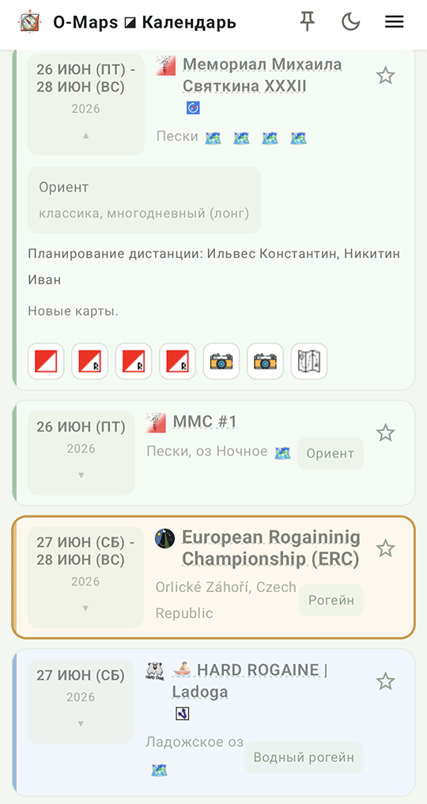
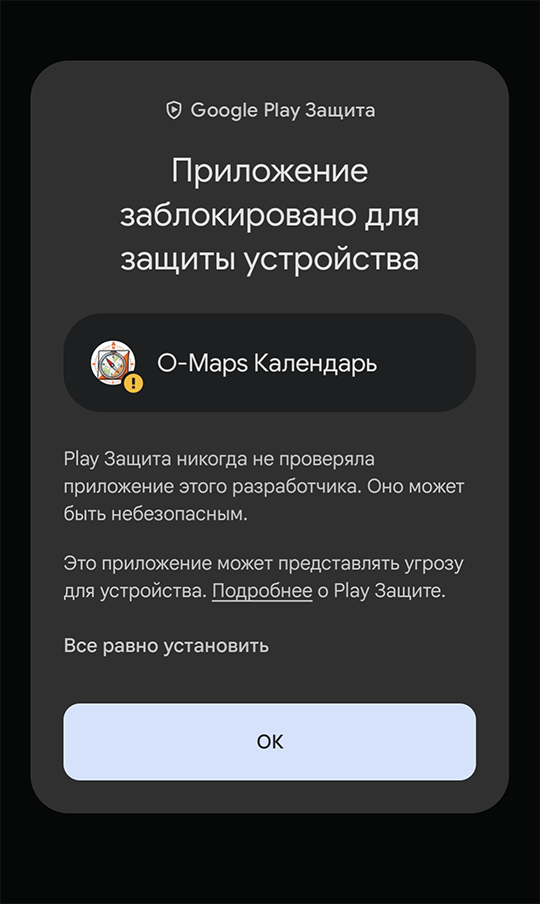
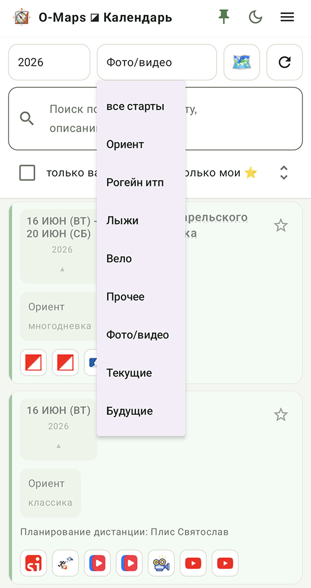
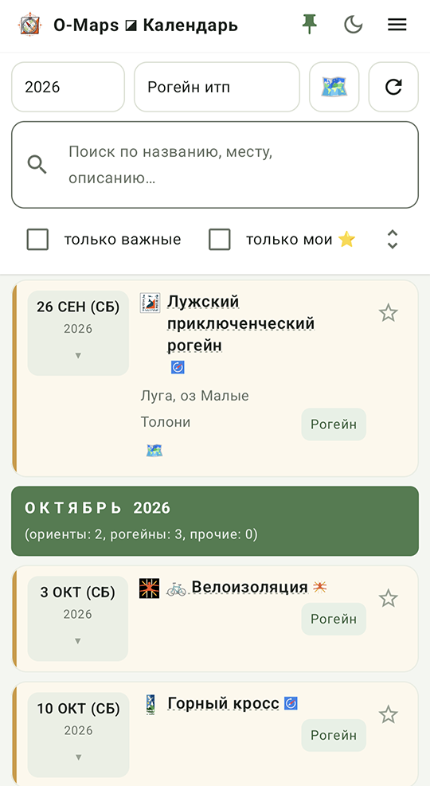
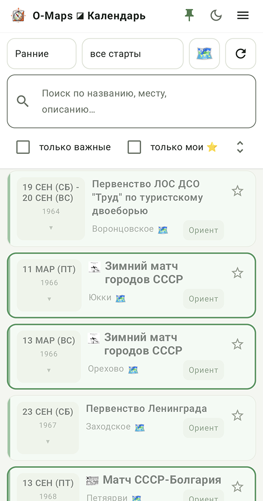
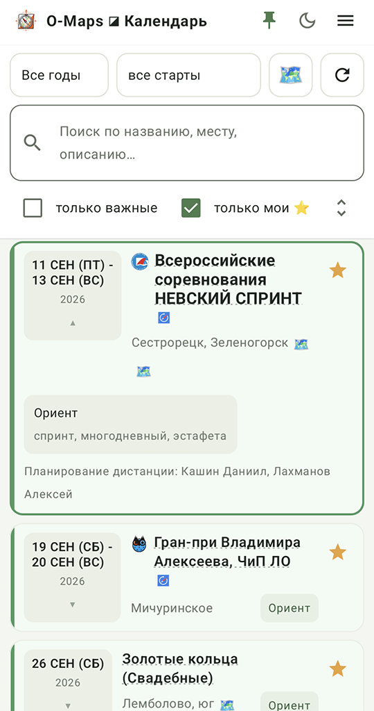
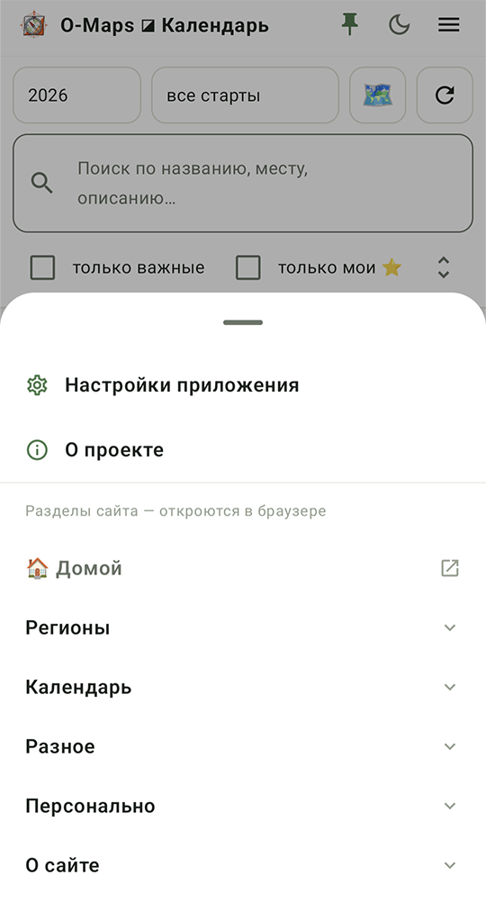
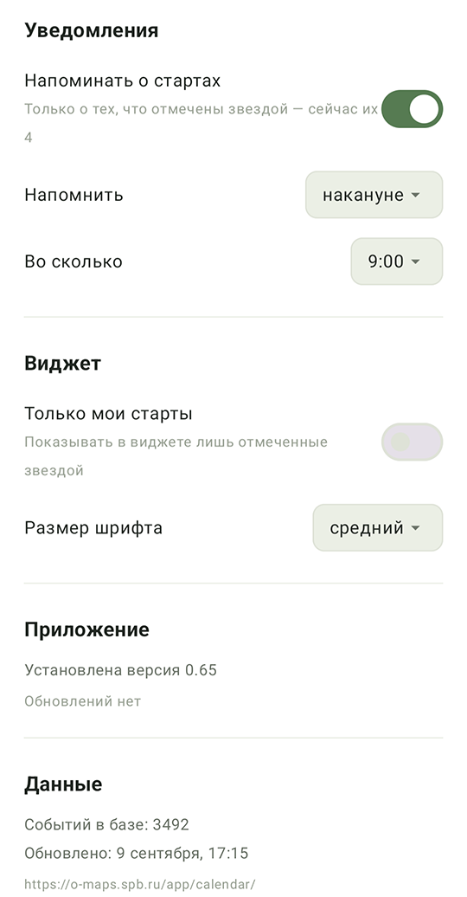

Что это

Это удобно там, где интернета обычно и нет — в лесу на соревнованиях, в электричке по дороге на старт. Данные подгружаются заранее и обновляются сами, когда связь появляется.
Кое-что приложение умеет сверх сайта: отправить старт знакомым, положить его в календарь телефона, напомнить о нём накануне и показать ближайшие старты виджетом на домашнем экране.
Приложение бесплатное, без рекламы и без сбора каких-либо сведений о пользователе. В магазине Google Play его нет — оно раздаётся прямо отсюда.
Скачать
Требуется Android 6.0 или новее. Само приложение занимает около 3,5 МБ, календарь — ещё около 4 МБ.
⚠️ О происхождении кода
Приложение написано с помощью искусственного интеллекта — и сам код, и его проверка. Автор пользуется им на своём телефоне, но никакого независимого аудита приложение не проходило.
Что можно проверить самостоятельно: приложение не запрашивает доступ ни к геолокации, ни к камере, ни к файлам, ни к контактам — только к интернету и к показу уведомлений. Никаких сведений о пользователе оно не собирает и никуда не передаёт. Отмеченные старты и настройки хранятся только на телефоне.
Программа распространяется как есть. Автор не несёт ответственности за возможный ущерб от её использования.

Установка
Откройте скачанный файл — Android спросит разрешение устанавливать приложения из браузера. Это обычный вопрос для программ не из магазина, разрешение спрашивается один раз и относится только к тому браузеру, откуда файл скачан.
Затем появится предупреждение Play Защиты: «Приложение заблокировано для защиты устройства». Формулировка пугающая, но означает она буквально то, что написано мелким шрифтом ниже: Play Защита никогда не проверяла приложение этого разработчика. Так Android встречает любую программу не из магазина — независимо от того, что у неё внутри. Ни вирусов, ни чего-либо подозрительного система в приложении не нашла: она просто не знает его автора.
Чтобы продолжить, нажмите «Все равно установить» — неприметную строку над большой кнопкой «ОК». Кнопка «ОК» отменяет установку.
При первом запуске приложение скачает календарь целиком. Трафика на это уходит около 400 КБ — данные передаются сжатыми, — а занимает загрузка пару секунд. Дальше приложение работает без сети и обновляет данные раз в сутки в фоне. Обновление скачивается, только если календарь действительно изменился, поэтому обычная суточная проверка стоит меньше килобайта.
Что умеет
Карточки стартов
Каждый старт — карточка с датой, названием, местом и видом соревнований. Цвет фона тот же, что в таблице на сайте: зеленоватый у ориентирования, охристый у рогейнов, голубоватый у водных, белый у остальных.
Нажатие на дату раскрывает карточку: показываются формат, планировщики дистанций, примечание и все ссылки — положение, регистрация, результаты, сплиты, фото, видео, карта района. Значки те же, что на сайте, так что узнаются с одного взгляда.
Название старта тоже ссылка — ведёт на его сайт или на страницу в O-Site. Такие названия подчёркнуты пунктиром.
Отбор и поиск

Поиск ищет по названию, месту, описанию, именам планировщиков и правообладателям карт — по всему сразу, как и на сайте.
Отдельно можно оставить только важные старты — чемпионаты, кубки и прочие главные соревнования сезона.

Архив

Ко многим из них приложены отсканированные протоколы и карты того времени.
Свои старты

Накануне — или за столько дней, сколько выбрано в настройках — приложение напомнит о них уведомлением. Одним на все старты сразу, а не по штуке на каждый. Напоминания приходят только об отмеченных: обо всём подряд приложение не пишет никогда.
Виджет
На домашний экран можно поставить виджет с ближайшими стартами. Слева дата, справа — «сегодня», «завтра» или «через сколько дней», между ними название и логотип клуба. Свои старты выделены звездой и цветом.
Виджет растягивается по высоте и ширине: сколько строк помещается, столько и показывает. Работает без сети — данные берутся из того же календаря, что хранится на телефоне. Нажатие открывает приложение, кнопка в правом верхнем углу обновляет данные с сайта, не открывая его.
В настройках приложения можно оставить в виджете только свои старты и выбрать размер шрифта — мелкий, средний или крупный.
Поделиться и запланировать
У раскрытой карточки есть две кнопки, которых на сайте нет — они работают с самим телефоном.
Поделиться отправляет старт в мессенджер, почту, заметки — куда выберете. Уходит название, дата, место и ссылка на сайт старта, так что получателю понятно, о чём речь, даже если он не станет открывать ссылку. Быстрее, чем копировать адрес из браузера. То же самое делает долгое нажатие на название старта, без раскрытия карточки.
В календарь телефона открывает системный календарь с заполненными полями: название, место, даты. Событие создаётся на весь день — часа старта в данных нет, а выдумывать его хуже, чем не указывать. Многодневки переносятся целиком, от первого дня до последнего.
Приложение при этом не просит доступа к календарю и ничего не записывает само: оно лишь предлагает заготовку, а сохраняете её вы — в том календаре, в каком захотите, поправив что нужно.
Меню и настройки


Оформление переключается кнопкой с луной в шапке — светлое или тёмное, независимо от настройки телефона.
Обновления
Приложение само проверяет, не вышла ли новая версия, и показывает об этом сообщение со ссылкой на скачивание. Устанавливать обновление можно поверх — отмеченные старты и настройки сохранятся.
Данные календаря обновляются отдельно и незаметно: приложение сверяется с сайтом раз в сутки и скачивает изменения, если они есть.
Обновить их вручную можно кнопкой справа от селекторов или привычным жестом — потянуть список вниз.
Замечания и предложения
Приложение молодое, так что замечания особенно полезны. Если что-то работает не так или чего-то не хватает — напишите мне или в чат проекта в Telegram.